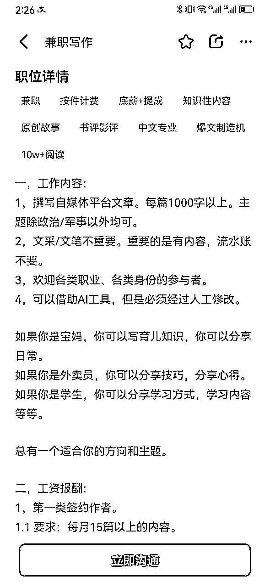
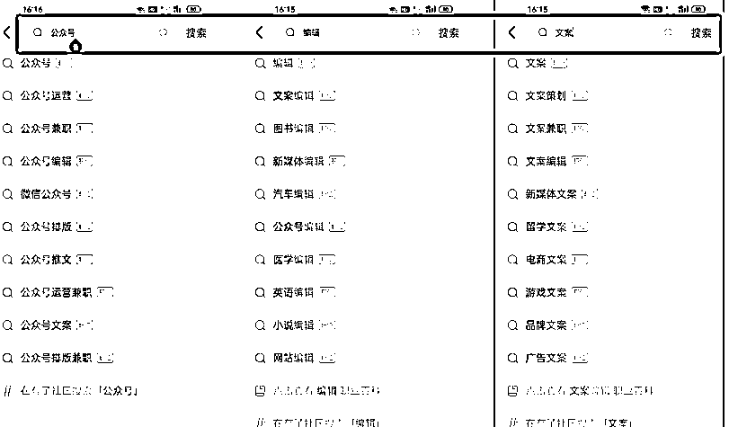

来源：https://cxqeimz77vr.feishu.cn/docx/D93qdO1DUoj2nIxIT8qcIkU5nee
各位圈友大家好，我是饭饭，
生财的龙珠圈友，目前在AI和电商赛道，
在加入生财以后多次真诚分享拿到了精华帖，也有不少圈友按照分享拿到了不错的结果，
有付出就有收获，更是链接了不少圈友的链接。
今年AI的出现极大的提高了写作的利润，我也通过AI代写赛道从最开始的一人摸索，到现在带领团队在一年的时间通过AI代写突破了百万营收。
通过BOSS直聘应聘，成为专业写手，接文字类型的单子，用AI来完成。代写赛道大有可为，在之前有看见过网上有人分享了BOSS直聘上面可以接写作单子，我们团队果断入局，专门的招聘了一个小助理来负责应聘各文案公司的线上写手，一个月的时间，专门的BOSS直聘这个平台，也是拿到了6000+成绩，实践验证了整个完整的方法。
你只需要熟练掌握AI写稿指令，做个专业写手，稳定月入6000+是没有什么问题的。
如图：大量的招聘需求：

（把自己的简历制作的美观、完善，有经验、有文字功底会比较容易应聘成功）
如果没有证件照的小伙伴可以先制作自己的证件照。
首先证件照免费制作
https://www.remove.bg/zh
然后在网上找一个精致的简历模板，然后将简历模板的信息改写成自己的，这样就能得到一份完善的简历。
这里我提供一个较为简单的高质量简历制作的方法，点击蓝色字体阅读：
下载BOSS直聘软件
手机号码登录，然后完成实名认证就可以。
（这个是关键步骤）

注册完成进入BOSS直聘以后就开始挨家挨个的公司应聘，我们借助AI工具能够完成的文字类别的处理，所以我们应聘的时候一定要注意三大原则。
（1）.只应聘文字类岗位。
岗位需求非常大，例如：
文案策划师、内容编辑、广告文案撰稿员、兼职写手、线上写稿、新媒体编辑、品牌文案编辑、SEO优化专员、媒体关系编辑、社交媒体运营、公关文案撰写、营销文案编辑、广告文案创意、客户服务文案编辑、商务文案策划、产品描述撰写、网站编辑、行业报道编辑、内容运营专员、活动文案编辑、品牌传播专员、数据分析文案撰写、财经类编辑、科技新闻编辑、法务文书撰写、教育行业写手、健康领域文案编辑、电商平台运营、游戏剧情策划、体育新闻编辑.....等等。
（2）只应聘可以线上兼职的。
很多公司在上面发布招聘岗位的时候会写清楚需要线下坐班，这类岗位我们是没法投递成功。
我们用AI工具来进行写作，所以应聘的都是线上的兼职写作岗位。
（3）多咨询，广投递
千万不要想着BOSS直聘上面的公司数量很小，文案代写市场的需求是极大的，
在通过关键词搜索岗位的时候换一个岗位关键词可能就搜到了非常多不同的公司，换一个不同的地址也会搜索到更多不同的文案岗位，每天多花时间多投递简历就会得到更多的回复。
打开BOSS直聘搜索界面有筛选功能。
在BOSS直聘上看见在招聘的公司以后就主动咨询，等待回复。
在沟通的时候一定要礼貌为主，我们之前在招聘岗位的时候就发现有很多人犯了很多大忌，很难应聘成功。
例如：“打招呼不礼貌、提问方式不对、简历不完善、简历没有证件照、简历空白、简历没有、简历和应聘岗位毫无关联.....等等”
提前规避这些问题，有助于更好的得到回复。
在BOSS直聘上面咨询也不可能所有人都会回复你，这点心态要摆正，如果人事回复，就尽可能的争取，如果没回复也不要气馁，多咨询，多尝试，能得到15%的回复率都是证明不错的。
如果甲方看了你的简历对你有意向的话就会和你交换微信，约试稿。
（试稿就是提前发一个要求和题目给你，不算费用给你试一下质量，有的公司通过要求以后会给你算报酬，但是大部分都是不给钱的）
这里分享一下应聘提高回复率的话术模板：
礼貌语+简短介绍+感谢用语
（在简短的第一句打招呼中要有礼貌，根据你投递的岗位去编写一些相关的工作经历，突出与岗位适配）
我们常用到的话术：
您好，看到贵司在招聘兼职写手，本人本科毕业，现在是一个自由写手，我之前写过短视频脚本、口播文案，今日头条，公众号商业文案等等，较强的文字功底。
在BOSS直聘上是可以直接交换微信的，我们在【个人信息】页面提前设置好自己的联系电话和微信，
设置完成以后你在咨询甲方的时候就可以互换微信。
添加到微信以后就可以具体的约试稿，不同类型的文案都是不同的试稿要求，按照甲方的要求来完成稿子就可以。

给甲方试稿的过程一定要认真对待，第一次试稿认真的看一下甲方要求，这就是检验质量的面试环节，如果顺利通过了就意味着后面泼天富贵向你而来，你就会顺利的接到不少的单子，稳稳当当的做一个自由职业者。特别是像这种甲方就是大批量的派单，多应聘几家，如果试稿通过的多，那你的单子只会越来越多。
当然也会遇见很多试稿不通过的情况，通过是偶然，不是必然。
这种情况也不要直接放弃，没通过的原因无非就是几种情况：
一是你写的稿件不符合要求，二是文案公司大量的试稿中有比你的更好的（被淘汰）
那就继续有礼貌的争取下一次机会就可以。
第一次试稿的注意事项：可以提前交稿、准时交稿绝不能迟到交稿。
目前实操下来我们也就遇到2家公司，到了结算稿费的时间拖欠消息不回，浪费了时间和精力，这个也是会遇见的情况，如果遇见这种情况直接举报该公司的BOSS账号就可以。
不要频繁的切换ip地址登录，也不要直接大量咨询“论文代写、发送微信等等”敏感内容，联系方式就通过平台的“交换微信”就可以。
文章属于定制类的产品，在交付给客户的过程中遇见返回修改的情况也很正常，这里我们就按照甲方提供的要求来认真写作，就像小时候答题一样，提前审题，搞清楚要求，不清楚的部分一定提前和甲方沟通，这样能够有效减少返回修改的概率。
我们需要熟练掌握AI写稿的指令和技巧。选择合适的模型，了解如何调整参数、如何输入指令，如何获得高质量的输出。可以使用开放源代码的AI写作工具，这里我们以常用的GPT-3.5，来做演示，（当然也可以选择使用其他的AI工具）。
这里在星球已经有非常多的项目都是关于chatGPT的解答和陪跑，我们已经有很多圈友上岸，关于chatgpt的账号如何注册、如何使用的教程可以参见星球里面的文章。
然后我们这里就是介绍充分的利用好gpt来提供稿件的质量和产量，大幅度降低写作成本和精准的解决客户所需。
【设定角色+文章标题+关键词+大纲+客户要求+改稿】
1、【设定角色】现在设定你是xxx角色（注意，chatgpt是一个万能的文字助手，你可以设定其为任何角色，然后通过发送角色的指令来帮助你更好的去呈现一篇相关文章）
2.【标题】 :在甲方告诉你的时候都会告诉你他需要写一篇什么主体什么类型的文章，这里在给ChatGPT描述你想写什么的时候就可以直接告诉chatgpt你需要写作的标题或者类型，如果你没有明确的标题就可以把零零碎碎的大白话丢给ChatGPT，让它理解和总结一下我们具体要写的是什么。
3、【关键词】: 如果客户提到文章中需要的关键词的话先把自己的关键词列出来，再让ChatGPT结合一下这些词，然后更全面的去写作。
4、【大纲】:每一篇文章都可以提前拟定大纲，根据大纲写出来的稿子会更加的严谨、高效，满足客户所需。
形成一个比较简单自洽的逻辑。然后请ChatGPT带入编辑，读者等的角色，不断优化大纲的逻辑和表达
5.【客户要求】客户在下单的时候都会提前说明一下自己的文章要求，按点整理好，在指令投喂的时候把指令输进去，先把内容丰富起来，待改稿时再或删或改，将行文达到一个更精准的写作。
6、【改稿】:改稿时可以分几遍，每一遍改的重点不同，比如:一遍调章节结构、一遍补充材料、然后再继续修改文章风格、往里面加几个金句、检查错别字和标点符号等等，直到最后文章成为了客户所需要的稿子。
目前的AI始终是一个大型的语言模型，文字是模板化缺乏温度的，把他当做一个工具来使用效果更好，chatGPT写出来的文章不能照搬使用，适当修改，将内容变得口语化一点。
【5】根据客户需求将指令详细化
例如：我有一个客户是一名抖音机房搭建的自媒体博主，他找我连载他的自媒体招商账号的文章，他提出了他的需求是希望文章阅读量高一点，这就是比较泛的一个要求，因为他也不知道怎么样能够让文章阅读量更高。这种需要拿到长期合作的单子就肯定不能问他怎么能够让文章阅读量更高，这种情况客户没有给出详细指令的就只能自己做准备。这里将指令详细化有一个技巧：
网上搜索：自媒体招商账号爆文的一些相关内容，看看是不是他这种类型的博主需要有哪些技巧，具有吸引力的标题、有趣的场景、真实反馈的招商案例、具体的实操方法、等等一系列的指令就可以用得上。
【6】借助工具，输入指令

这是目前我们也有用到的一个指令参考的工具：BestPrompts
有时候遇见不熟悉的领域可以复制里面的指令增加准确性，这是注册网址：https://bestprompts.cn/#/index
1、【设定角色】
你是一位名叫小明的内容创作者，专注于撰写各类文章，从科技到生活，样样皆通。你善于与ChatGPT合作，将其视为你的文笔助手，以更好地呈现出各种风格的文章。
2、【标题】
“未来科技：人工智能与人类共生之道”
3、【关键词】
人工智能、未来科技、科技发展、共生关系、技术创新
4、【大纲】
引言
简要介绍人工智能的发展历程
引出人工智能与人类共生的议题
人工智能的进步与挑战
探讨人工智能在医疗、教育等领域的应用
分析人工智能可能带来的道德和伦理挑战
共生之道
引入人与人工智能的协同工作
探讨科技创新在解决社会问题中的潜力
未来展望
想象未来科技与人类的深度融合
提出共同努力的方向，以实现人工智能与人类的和谐共生
5、【客户要求】
客户要求突出人工智能与人类共生的主题，强调科技创新对社会的积极影响，同时要注意提及可能的伦理问题。客户希望文章结构清晰，语言简练，用词准确。
6、【改稿】
第一遍：结构调整
优化引言，更生动地引出主题
调整章节结构，确保逻辑清晰
第二遍：补充材料
添加具体案例，支持人工智能在医疗和教育中的应用
引用专家观点，加强文章的可信度
第三遍：修改风格
注重句子的流畅度，使读者更容易理解
优化段落之间的过渡，确保文章连贯性
最后遍：细致修改
检查拼写和标点符号，确保文章的语法正确
添加一些引人深思的金句，增添文章的深度
1、【设定角色】
你是一位名叫小明的内容创作者，专注于撰写各类文章，从科技到生活，样样皆通。你善于与ChatGPT合作，将其视为你的文笔助手，以更好地呈现出各种风格的文章。
2、【标题】
“未来科技：人工智能与人类共生之道”
3、【关键词】
人工智能、未来科技、科技发展、共生关系、技术创新
4、【大纲】
5、【客户要求】
客户要求突出人工智能与人类共生的主题，强调科技创新对社会的积极影响，同时要注意提及可能的伦理问题。客户希望文章结构清晰，语言简练，用词准确。
6、【改稿】
指令模板：【设定角色+文章标题+关键词+大纲+客户要求+改稿】


很大部分文章都是完全按照这个步骤来完成写作，整个过程花费的时间也会较少，只需要熟悉指令即可。
如图这是客户要求：

使用ChatGPT高效写作具体实操：
按照客户所需多次投入指令就可以得到客户所需要的商业计划书，很详细很完整，满足客户要求就可以。
AI代写项目无疑是一个充满潜力的赛道。文字市场的需求远超过我们的认知，而AI代写正是一个简单而高效的AI应用，身处AI时代，我们得利用AI工具来为我们打工。
趁现在，可以借助AI力量，拥抱AI潮流，一起挖掘“代”字背后的亿万市场。